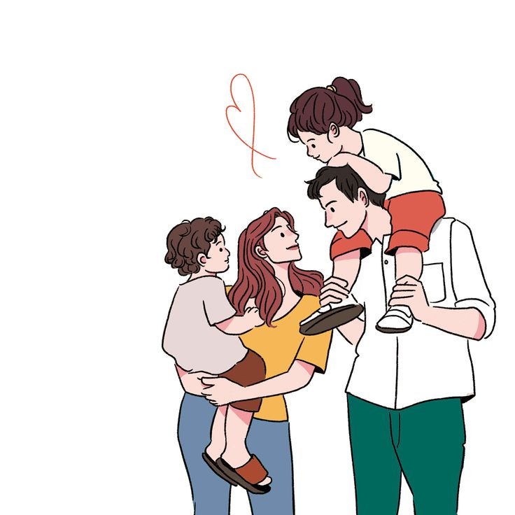

이 책은 육아를 다루는 책이다. 육아는 부부가 함께하는 것인데 위 책은 엄마가 아이를 안고 있는 모습이 보인다. 이를 보면 아이의 육아는 엄마 혼자서 하는 것인가?라는 의문을 일으킬 수 있다. 이는 우리에게서 비롯된 고정 관념 때문이다. 여성이 집안일을하고 남성이 바깥일을 하는 것과 같은 생각 말이다.

정치적 관점
남자는 바깥일을 하고 여자는 집안일을 한다. 이는 많은 사람들이 과거에 지닌 생각이다. 현재는 많이 나아졌지만 이에 관한 생각을 하는 사람이 아직 완전히 없어진 것은 아니다. 이는 관습처럼 내려온 사회적 분위기 때문에 이를 지적한다고 많은 것이 변화하기는 어려울 것이다.
나의 생각
많은 사람이 생각하는 것을 풀어나간 것이 책이기 때문에 이를 온전히 비판하지는 않는다. 하지만 조금 더 고민해 보고 바꿀 수 있는 점이라 생각한다.